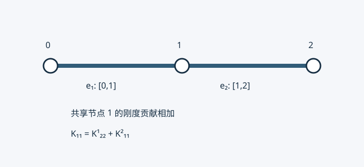

08 · 二维单元刚度矩阵与总体装配#
课堂来源：S01 物理第 13–15 页。旧稿提及的录音原件当前未提供，不能核实引语、时间戳、课次、作业及考核安排；本章只以可见板书为课堂依据。Q4 手算矩阵、Q9 显式构造和坐标变换是解释补充。
从积分式读出矩阵#
第 6 章已经构造二维标量扩散问题的弱形式。现在要把积分变成能存入计算机的系数。对一个有 m 个节点的单元 e，设 N=[N1,…,Nm] 是形函数行阵，ue 是 m×1 节点场值列向量，ve 是检验函数的节点系数。于是
uh=Nue,∇uh=Bue,B=[N1,xN1,y⋯⋯Nm,xNm,y].
B 为 2×m，在标量扩散问题中称梯度矩阵；它与二维弹性力学的应变矩阵维度不同。将 vh=Nve 同时代入积分，节点系数与积分变量无关，便可提出：
∫ek∇uh⋅∇vhdA=veTKe(∫eBTkBdA)ue.
这里 k 是标量，不必硬写成 2×2；各向异性时才用正定导热张量 D 替代 k。矩阵元素为
Kije=∫ek(Ni,xNj,x+Ni,yNj,y)dA.
两个方向相加，不能把 y 项误写成减号。它关于 i,j 对称。Ke 为 m×m，且纯扩散时单位分解 ∑iNi=1 意味着 Ke1=0。这表示常数场没有梯度能量；不是完整边界约束后的矩阵仍奇异。
Q4 单元的一个完整积分#
在单位正方形 [0,1]2 上，按左下、右下、右上、左上编号。取 k=1，形函数为 (1−x)(1−y),x(1−y),xy,(1−x)y。例如 N1,x=−(1−y),N1,y=−(1−x)，故
K11e=∫01∫01[(1−y)2+(1−x)2]dxdy=32.
再算 K12e=∫[−(1−y)2+x(1−x)]dA=−1/6。其余项同样计算，得到
Ke=614−1−2−1−14−1−2−2−14−1−1−2−14.
行和为零，特征值为 0,2/3,1,1。常数体源 f 的载荷向量为 fe=(f/4)[1,1,1,1]T。这些结果由实验脚本以独立积分验证。
边界也有单元贡献#
对 Robin 边 γ，k∂nu+αu=g。边上仍使用场的插值迹，因而
Kγ=∫γαNTNds,fγ=∫γgNTds.
若直边长 ℓ，两端线性形函数且 α,g 为常数，则
Kγ=6αℓ[2112],fγ=2gℓ[11].
所以 Robin 边界一般不只是“在一个对角元加 α”：还耦合边两端。Neumann 取 α=0，仅有载荷；Dirichlet 在自由度消元时处理。对不与坐标轴平行的直边不能随意用 dx 或 dy 替代 ds。
装配是局部编号到全局编号的累加#
设单元连接表为 Ie=[i1,…,im]，含每个局部节点的全局编号。局部条目 Kabe 应加入全局 Kiaib；载荷也累加到 Fia。可以引入提取矩阵 Pe，使 ue=Peu，则
K=e∑PeTKePe+γ∑PγTKγPγ,F=e∑PeTfe+γ∑PγTfγ.
共享节点的贡献相加，独立单元的局部节点号即使相同也不能直接叠在同一个位置。节点号、自由度号、自由方程号是不同概念：标量问题每节点一个自由度，二维弹性问题每节点通常两个。已知自由度不列入自由方程，但其列乘已知值要移到右端。具体分块消元见第 3 章。

图用两个一维单元突出编号映射；二维装配规则完全相同，只是每个局部块更大。20 个标量节点、其中 8 个给定值时有 12 个自由未知量，这是计数示例，不能由一个模糊板书矩阵恢复所有边界节点的具体编号。
能量证明可解性的条件#
对满足齐次 Dirichlet 约束的任意离散变化 zh，
zTKFFz=∫Ωk∣∇zh∣2dA+∫ΓRαzh2ds.
若区域连通、k≥k0>0，零能量迫使 zh 是常数。具有正边界测度的 Dirichlet 部分上 zh=0，或者足够的正 Robin 约束，会迫使该常数为零。因此自由矩阵 SPD。多连通分量要分别约束；欠积分产生额外零模态、退化网格或错误装配时，不能只因“处理过边界”就保证可逆。此式对变化 zh，不是将任意非零边值解本身代入就能证明正定。
九节点双二次单元#
S01 第 15 页画出九节点布局。这里补全构造，保留其数学内容，不将页上“考试”的个人批注解释为教师考核承诺。参考坐标取 ξ,η∈[−1,1]，每个方向的节点为 −1,0,1。一维二次基函数是
ℓ−(s)=2s(s−1),ℓ0(s)=1−s2,ℓ+(s)=2s(s+1).
二维函数取九种张量积 Nab=ℓa(ξ)ℓb(η)。例如中心节点 N9=(1−ξ2)(1−η2)。板书编号为四角 1–4、下右上左边中点 5–8、中心 9；程序连接表必须与此一致。
N 为 1×9，标量梯度矩阵 B 为 2×9，Ke 为 9×9。双二次空间含 ξ2η2，区别于六节点三角形的总次数二次空间。控制方程二阶并不意味着线性元不能求解；提高次数是为了在光滑性允许时提高近似能力。
参考单元、Jacobian 与 Gauss 积分#
复杂几何不宜逐单元手算。用相同形函数插值几何与场：x=∑Nixi,y=∑Niyi,uh=∑Niui，称等参表示。明确约定
J=[xξyξxηyη],[uξuη]=JT[uxuy].
因此物理梯度是 J−T 乘参考梯度，而面积微元为 dA=∣detJ∣dξdη。这两个变换不能漏掉任一个。几何映射还应一一对应、无折叠；有限元程序通常要求一致正定向的 detJ>0，不能靠绝对值掩盖无效网格。
一维两点 Gauss 在 [−1,1] 上为节点 ±1/3、权重均为 1，精确到三次多项式。二维取张量积。常系数仿射矩形 Q4 刚度可用 2×2 点精确积分，仿射 Q9 常用 3×3 点；变系数、非仿射畸变单元需检查积分精度，不能承诺同样精确。三角形参考域不同，不应套用整个正方形的积分限。
参数化直边或曲边 r(s) 时，dsarc=∣r′(s)∣ds。三角形也完全可以直接在物理坐标解析积分，面积坐标和参考映射是方便的工具，不是唯一合法方法。
自测：为什么 Ke1=0 与施加边界后的 SPD 不矛盾？若一条 Robin 边长 2、α=3,g=4，其边界矩阵和载荷各是什么？下一章处理三角形。